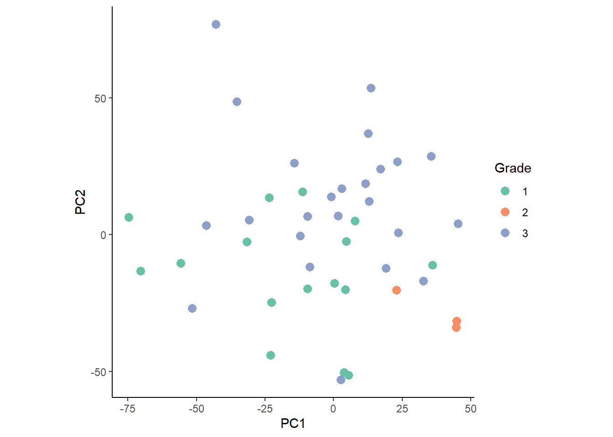

Last updated: 2024-03-11
Checks: 7 0
Knit directory:
ProtocolLabRotationSaezRodriguezGroup/
This reproducible R Markdown analysis was created with workflowr (version 1.7.1). The Checks tab describes the reproducibility checks that were applied when the results were created. The Past versions tab lists the development history.
Great! Since the R Markdown file has been committed to the Git repository, you know the exact version of the code that produced these results.
Great job! The global environment was empty. Objects defined in the global environment can affect the analysis in your R Markdown file in unknown ways. For reproduciblity it’s best to always run the code in an empty environment.
The command set.seed(20240306) was run prior to running
the code in the R Markdown file. Setting a seed ensures that any results
that rely on randomness, e.g. subsampling or permutations, are
reproducible.
Great job! Recording the operating system, R version, and package versions is critical for reproducibility.
Nice! There were no cached chunks for this analysis, so you can be confident that you successfully produced the results during this run.
Great job! Using relative paths to the files within your workflowr project makes it easier to run your code on other machines.
Great! You are using Git for version control. Tracking code development and connecting the code version to the results is critical for reproducibility.
The results in this page were generated with repository version 38a9f93. See the Past versions tab to see a history of the changes made to the R Markdown and HTML files.
Note that you need to be careful to ensure that all relevant files for
the analysis have been committed to Git prior to generating the results
(you can use wflow_publish or
wflow_git_commit). workflowr only checks the R Markdown
file, but you know if there are other scripts or data files that it
depends on. Below is the status of the Git repository when the results
were generated:
Untracked files:
Untracked: 10X_Visium_ACH005.tar.gz
Untracked: ACH005/
Untracked: data/10X_Visium_ACH005.tar.gz
Untracked: hca_p14.rds
Untracked: omni_resource.csv
Untracked: omnipathr-log/
Untracked: result/
Untracked: results/
Note that any generated files, e.g. HTML, png, CSS, etc., are not included in this status report because it is ok for generated content to have uncommitted changes.
These are the previous versions of the repository in which changes were
made to the R Markdown
(analysis/ReproduceSignaturePaper.Rmd) and HTML
(docs/ReproduceSignaturePaper.html) files. If you’ve
configured a remote Git repository (see ?wflow_git_remote),
click on the hyperlinks in the table below to view the files as they
were in that past version.
| File | Version | Author | Date | Message |
|---|---|---|---|---|
| Rmd | 38a9f93 | leotenshii | 2024-03-11 | Revert "changed paths to data/…" |
| Rmd | 5e9bf15 | leotenshii | 2024-03-11 | changed paths to data/… |
| Rmd | 5ec41b8 | leotenshii | 2024-03-11 | upload of vignettes |
MISTy uses an explainable machine learning algorithm to analyze spatial omics data sets within and between spatial contexts, called views. Structural and functional data can be used to train the MISTy model for one or more samples. After training the model, in the result space, these samples are defined by a vector consisting of the sample signatures. There are three signatures: performance, contribution, and importance. For each marker, the signatures are a concatenation of the following values:
Performance signature: The variance explained by using the intraview alone, the variance explained by the multiview model, as well as the explained gain in variance for each marker.
Contribution signature: Fraction of contribution of each view for each marker.
Importance signature: The estimated and weighted importance for each predictor-target marker pair from all views.
Based on the signatures, we analyze what causes differences in performance metrics between the samples.
In this vignette, we will reproduce the signature analysis from the
original
publication. The data used was obtained from Imaging Mass Cytometry
(IMC) of 46 breast cancer samples. In total, 26 protein markers were
measured across three different tumor degrees. For the MISTy analysis,
three views were created: an intraview, a juxtaview, and a paraview. The
zone of indifference (ZOI) of the paraview was set to the threshold of
the juxtaview. This way, an overlap of both is avoided. The parameter
l was optimized for each marker and can be found here
in Fig. S8. For more information on the paraview parameters see
?add_paraview(). The MISTy model was then trained with the
standard parameters. We will now continue after the training of the
MISTy model. The collected results are available from the
imc_bc_optim_zoi.RDS file.
First load the necessary packages and load the data:
#MISTy
library(mistyR)
library(future)
#Data manipulation
library(tidyverse)
#Data analysis
library(factoextra)
plan(multisession, workers = 6)
#Data
download.file("https://www.dropbox.com/scl/fi/yolsq97ouc7ay8wvdibp6/imc_bc_optim_zoi.RDS?rlkey=txu88dec23mtw7tfy99e7ucb0&dl=1",
destfile = "imc_bc_optim_zoi.RDS",
method = "auto",
mode = "wb")
download.file("https://www.dropbox.com/scl/fi/h19svd580yxmue5x2c3he/bc_metadata.tsv?rlkey=j08v6ivjqz5uwn8ldjjbs4f5j&dl=1",
destfile = "bc_metadata.tsv",
method = "auto",
mode = "wb")
bc_results <- readRDS("imc_bc_optim_zoi.RDS")
meta <- read_delim("bc_metadata.tsv", delim = "\t")Now we can extract the signatures from the loaded results. We will
first look at the R2 signature. Furthermore, we remove
markers that have an R2 gain of less than 2% by setting
trim = 2.
per_signature <- extract_signature(bc_results,
type = "performance",
trim = 2,
trim.measure = "gain.R2")The goal here is to find out which factors are responsible for differences in R2. For this, we perform a PCA with the signatures:
persig_pca <- prcomp(per_signature %>% select(-sample))To identify the groups that drive the differences in R2, we join the metadata to the PCA results.
permeta_pca <- left_join(as_tibble(persig_pca$x) %>%
mutate(sample = per_signature$sample),
meta %>%
filter(`Sample ID` %in% per_signature$sample),
by = c("sample" = "Sample ID")) %>%
mutate(Grade = as.factor(Grade))With the combined data, we plot the PCA colored by the factors grade and clinical sub-type.
#Grade
ggplot(permeta_pca %>% filter(!is.na(Grade)), aes(x = PC1, y = PC2)) +
geom_point(aes(color = Grade), size = 3) +
coord_fixed() +
scale_color_brewer(palette = "Set2") +
theme_classic()
#Sub-type
ggplot(permeta_pca %>%filter(!is.na(Grade), HER2 != "?"),
aes(x = PC1, y = PC2)) +
geom_point(aes(color = clinical_type), size = 3) +
coord_fixed() +
scale_color_brewer(palette = "Set2") +
theme_classic()The plots show slight, but not clearly defined groupings according to the two factors.
Next, we investigate the importance of the R2 signature components of the protein markers for the PCA.
fviz_pca_var(persig_pca,
col.var = "cos2",
repel = TRUE,
select.var = list(cos2 = 15),
gradient.cols = c("#666666", "#377EB8", "#E41A1C")) +
theme_classic()The first two principal components cover 50.8% of the variance of the samples. We observe that the gain in variance of the protein markers CD68, ki67, and SMA (smooth muscle actin) is the highest. These proteins associate with the processes of promoting phagocytosis, cell proliferation, and vascularization, respectively. This suggests that changes in these processes may drive the differences between tumor grades and clinical sub-types.
We will repeat the same approach now with the importance signatures. First, extract them:
imp_signature <- extract_signature(bc_results,
type = "importance",
trim = 2,
trim.measure = "gain.R2")Again, we removed markers that exhibit less than 2% of gain in R2.
Perform the PCA:
impsig_pca <- prcomp(imp_signature %>% select(-sample))Join the metadata to the PCA results:
impmeta_pca <- left_join(as_tibble(impsig_pca$x) %>%
mutate(sample = imp_signature$sample),
meta %>%
filter(`Sample ID` %in% imp_signature$sample),
by = c("sample" = "Sample ID")) %>%
mutate(Grade = as.factor(Grade))Plot the PCA colored by the factors grade and clinical sub-type:
#Grade
ggplot(impmeta_pca %>% filter(!is.na(Grade)), aes(x = PC1, y = PC2)) +
geom_point(aes(color = Grade), size = 3) +
coord_fixed() +
scale_color_brewer(palette = "Set2") +
theme_classic()#Sub-type
ggplot(impmeta_pca %>% filter(!is.na(Grade), HER2 != "?") %>%
mutate(clinical_type = paste0(ifelse(ER=="+" | PR=="+", "HR+", "HR-"),"HER2",HER2)),
aes(x = PC1, y = PC2)) +
geom_point(aes(color = clinical_type), size = 3) +
coord_fixed() +
scale_color_brewer(palette = "Set2") +
theme_classic()We observe a weak clustering when colored by the tumor grade.
Lastly, we take a look at the importance of the signature components
from the PCA. In this case, they are the importance of the interaction
of protein markers predictor-target pairs for each view. Thus the
variable naming follows the pattern
view_predictor_target.
fviz_pca_var(impsig_pca,
col.var = "cos2",
select.var = list(cos2 = 15),
gradient.cols = c("#666666", "#377EB8", "#E41A1C"),
repel = TRUE) +
theme_classic()This time, the first two principal components cover only 16% of the variance of the samples. This can be explained by the richer information used for the PCA. We notice that most of the driving interactions are from the paraview, reminding us of the significant role of spatial context.
browseVignettes("mistyR")
Here is the output of sessionInfo() at the point when
this document was compiled.
sessionInfo()R version 4.3.2 (2023-10-31 ucrt)
Platform: x86_64-w64-mingw32/x64 (64-bit)
Running under: Windows 10 x64 (build 19045)
Matrix products: default
locale:
[1] LC_COLLATE=German_Germany.utf8 LC_CTYPE=German_Germany.utf8
[3] LC_MONETARY=German_Germany.utf8 LC_NUMERIC=C
[5] LC_TIME=German_Germany.utf8
time zone: Europe/Berlin
tzcode source: internal
attached base packages:
[1] stats graphics grDevices utils datasets methods base
other attached packages:
[1] factoextra_1.0.7 lubridate_1.9.3 forcats_1.0.0 stringr_1.5.1
[5] dplyr_1.1.4 purrr_1.0.2 readr_2.1.5 tidyr_1.3.0
[9] tibble_3.2.1 ggplot2_3.5.0 tidyverse_2.0.0 future_1.33.1
[13] mistyR_1.10.0 workflowr_1.7.1
loaded via a namespace (and not attached):
[1] gtable_0.3.4 xfun_0.41 bslib_0.6.1 rstatix_0.7.2
[5] processx_3.8.3 ggrepel_0.9.4 callr_3.7.3 tzdb_0.4.0
[9] vctrs_0.6.5 tools_4.3.2 ps_1.7.5 generics_0.1.3
[13] parallel_4.3.2 fansi_1.0.6 highr_0.10 pkgconfig_2.0.3
[17] RColorBrewer_1.1-3 assertthat_0.2.1 lifecycle_1.0.4 farver_2.1.1
[21] compiler_4.3.2 git2r_0.33.0 munsell_0.5.0 getPass_0.2-4
[25] codetools_0.2-19 carData_3.0-5 httpuv_1.6.13 htmltools_0.5.7
[29] sass_0.4.8 yaml_2.3.8 car_3.1-2 ggpubr_0.6.0
[33] crayon_1.5.2 later_1.3.2 pillar_1.9.0 jquerylib_0.1.4
[37] whisker_0.4.1 cachem_1.0.8 abind_1.4-5 parallelly_1.37.1
[41] tidyselect_1.2.0 digest_0.6.33 stringi_1.8.3 listenv_0.9.1
[45] labeling_0.4.3 rprojroot_2.0.4 fastmap_1.1.1 grid_4.3.2
[49] archive_1.1.7 colorspace_2.1-0 cli_3.6.2 magrittr_2.0.3
[53] utf8_1.2.4 broom_1.0.5 withr_3.0.0 backports_1.4.1
[57] scales_1.3.0 promises_1.2.1 bit64_4.0.5 timechange_0.3.0
[61] rmarkdown_2.25 httr_1.4.7 globals_0.16.3 bit_4.0.5
[65] ggsignif_0.6.4 hms_1.1.3 evaluate_0.23 knitr_1.45
[69] rlang_1.1.2 Rcpp_1.0.11 glue_1.6.2 rstudioapi_0.15.0
[73] vroom_1.6.5 jsonlite_1.8.8 R6_2.5.1 fs_1.6.3
sessionInfo()R version 4.3.2 (2023-10-31 ucrt)
Platform: x86_64-w64-mingw32/x64 (64-bit)
Running under: Windows 10 x64 (build 19045)
Matrix products: default
locale:
[1] LC_COLLATE=German_Germany.utf8 LC_CTYPE=German_Germany.utf8
[3] LC_MONETARY=German_Germany.utf8 LC_NUMERIC=C
[5] LC_TIME=German_Germany.utf8
time zone: Europe/Berlin
tzcode source: internal
attached base packages:
[1] stats graphics grDevices utils datasets methods base
other attached packages:
[1] factoextra_1.0.7 lubridate_1.9.3 forcats_1.0.0 stringr_1.5.1
[5] dplyr_1.1.4 purrr_1.0.2 readr_2.1.5 tidyr_1.3.0
[9] tibble_3.2.1 ggplot2_3.5.0 tidyverse_2.0.0 future_1.33.1
[13] mistyR_1.10.0 workflowr_1.7.1
loaded via a namespace (and not attached):
[1] gtable_0.3.4 xfun_0.41 bslib_0.6.1 rstatix_0.7.2
[5] processx_3.8.3 ggrepel_0.9.4 callr_3.7.3 tzdb_0.4.0
[9] vctrs_0.6.5 tools_4.3.2 ps_1.7.5 generics_0.1.3
[13] parallel_4.3.2 fansi_1.0.6 highr_0.10 pkgconfig_2.0.3
[17] RColorBrewer_1.1-3 assertthat_0.2.1 lifecycle_1.0.4 farver_2.1.1
[21] compiler_4.3.2 git2r_0.33.0 munsell_0.5.0 getPass_0.2-4
[25] codetools_0.2-19 carData_3.0-5 httpuv_1.6.13 htmltools_0.5.7
[29] sass_0.4.8 yaml_2.3.8 car_3.1-2 ggpubr_0.6.0
[33] crayon_1.5.2 later_1.3.2 pillar_1.9.0 jquerylib_0.1.4
[37] whisker_0.4.1 cachem_1.0.8 abind_1.4-5 parallelly_1.37.1
[41] tidyselect_1.2.0 digest_0.6.33 stringi_1.8.3 listenv_0.9.1
[45] labeling_0.4.3 rprojroot_2.0.4 fastmap_1.1.1 grid_4.3.2
[49] archive_1.1.7 colorspace_2.1-0 cli_3.6.2 magrittr_2.0.3
[53] utf8_1.2.4 broom_1.0.5 withr_3.0.0 backports_1.4.1
[57] scales_1.3.0 promises_1.2.1 bit64_4.0.5 timechange_0.3.0
[61] rmarkdown_2.25 httr_1.4.7 globals_0.16.3 bit_4.0.5
[65] ggsignif_0.6.4 hms_1.1.3 evaluate_0.23 knitr_1.45
[69] rlang_1.1.2 Rcpp_1.0.11 glue_1.6.2 rstudioapi_0.15.0
[73] vroom_1.6.5 jsonlite_1.8.8 R6_2.5.1 fs_1.6.3